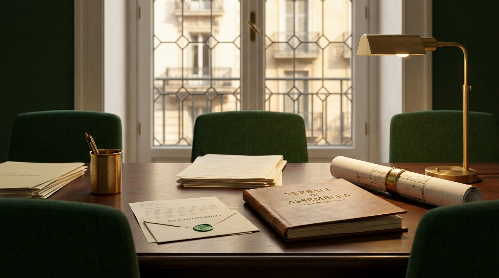

Mancata convocazione in assemblea: chi può impugnare la delibera
La giurisprudenza è netta: il vizio di mancata convocazione all'assemblea condominiale può essere fatto valere soltanto dal condomino che non ha ricevuto l'avviso. Chi era regolarmente convocato non può contestare gli errori formali che riguardano la posizione altrui. Una distinzione che incide su legittimazione, termini e qualificazione del vizio.

Il principio: legittimazione esclusiva del pretermesso
La questione è ricorrente nelle aule di giustizia: un condomino, scontento di una delibera, cerca di farla cadere lamentando che altri partecipanti non sarebbero stati convocati. Secondo l'orientamento consolidato della Corte di Cassazione, questa strada è sbarrata.
La mancata convocazione è un vizio che lede l'interesse del singolo condomino pretermesso (cioè non avvisato) a partecipare alla discussione e al voto. È dunque un vizio "personale": può farlo valere soltanto chi lo ha subito. Il condomino regolarmente convocato non ha alcun titolo per dolersi della convocazione altrui, perché il suo diritto di partecipazione è stato rispettato.
Nullità o annullabilità: il confine tracciato dalle Sezioni Unite
Il punto decisivo riguarda la natura del vizio. La delibera adottata senza che un condomino sia stato convocato non è nulla, ma soltanto annullabile.
La distinzione non è teorica. Le Sezioni Unite della Cassazione (sent. n. 9839/2021) hanno ridisegnato il confine tra i due regimi. Sono nulle le delibere prive degli elementi essenziali, con oggetto impossibile o illecito, o che incidono su diritti individuali dei condomini sulle parti comuni. Sono invece annullabili le delibere affette da vizi procedurali, tra cui rientra a pieno titolo l'omessa o irregolare convocazione.
Le conseguenze pratiche sono rilevanti:
- la nullità può essere fatta valere da chiunque vi abbia interesse, senza limiti di tempo;
- l'annullabilità può essere chiesta solo dai soggetti legittimati ed entro un termine breve.
Classificare la mancata convocazione come causa di annullabilità significa quindi restringere sia la platea di chi può agire sia la finestra temporale per farlo.
I termini ex art. 1137 c.c. e la posizione del non convocato
L'art. 1137 del Codice civile fissa in trenta giorni il termine per impugnare le delibere annullabili. La decorrenza varia in base alla posizione del condomino:
- per i dissenzienti e gli astenuti presenti in assemblea, dalla data della deliberazione;
- per gli assenti, dalla comunicazione del verbale.
Il condomino non convocato è equiparato all'assente. Per lui, dunque, il termine di trenta giorni decorre dal momento in cui riceve comunicazione del verbale assembleare, non dalla data della riunione cui non ha potuto partecipare. Superato il termine, la delibera diventa definitivamente efficace anche nei suoi confronti.
Maggioranze diverse per oggetti diversi
Un secondo profilo merita attenzione: la pronuncia richiama la differenza di quorum a seconda dell'oggetto deliberato.
L'art. 1136 c.c. gradua le maggioranze richieste in base all'importanza della decisione. Un conto è affidare un incarico a un tecnico per la verifica delle tabelle: si tratta di un atto di gestione che segue i quorum ordinari. Altro conto è modificare o revisionare le tabelle millesimali.
Qui interviene l'art. 69 delle disposizioni di attuazione del Codice civile, che ammette la revisione delle tabelle in due ipotesi: con il consenso di tutti i condomini, oppure — per via giudiziale — quando risulti un errore o un'alterazione superiore a un quinto del valore originario. Confondere l'incarico al tecnico con la modifica vera e propria delle tabelle è un errore frequente, che può rendere la delibera vulnerabile.
Implicazioni pratiche
Per il condomino la lezione è duplice: il vizio di convocazione tutela chi lo subisce, non chi vorrebbe usarlo come grimaldello contro decisioni sgradite; e il termine di impugnazione è breve e perentorio, con decorrenza che cambia secondo la propria posizione.
Per l'amministratore il rischio è concreto: una convocazione incompleta apre la porta all'annullamento su iniziativa del pretermesso. La cura nell'invio degli avvisi e nella conservazione delle prove di ricezione non è un adempimento formale, ma una garanzia di stabilità delle delibere.
Cosa fare in concreto
- È opportuno che il condomino verifichi anzitutto la propria posizione: un vizio che riguarda altri non legittima la sua impugnazione.
- Conviene controllare la data di ricezione del verbale, da cui decorre il termine di trenta giorni per chi era assente o non convocato.
- È utile distinguere con precisione l'oggetto della delibera, perché incarico tecnico e modifica delle tabelle seguono regole di maggioranza differenti.
- L'amministratore dovrebbe conservare ricevute e prove di invio degli avvisi di convocazione a tutti i condomini.
- Nei casi dubbi sulla qualificazione del vizio è prudente un esame della documentazione prima di assumere iniziative.
Disclaimer
Contributo informativo a cura di Tamburro & Partners Avvocati. Non costituisce parere legale.
Ogni condominio ha una storia a sé.
Se gestisci un'amministrazione e vuoi un confronto su una specifica questione condominiale, scrivi allo studio. Ti rispondiamo entro un giorno lavorativo.